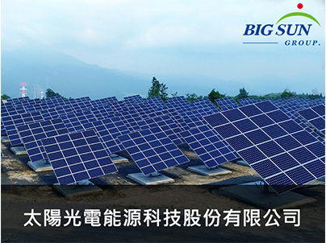
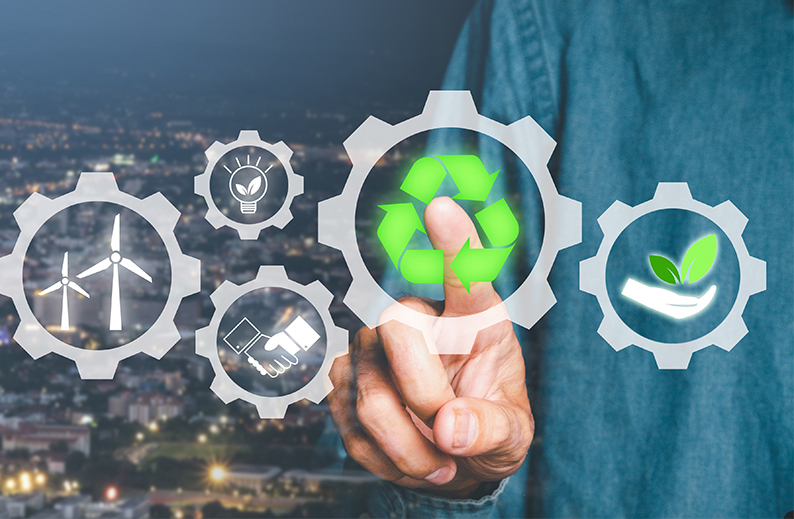
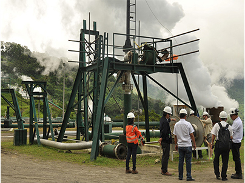
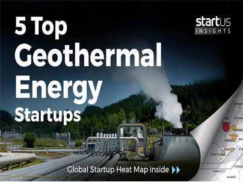
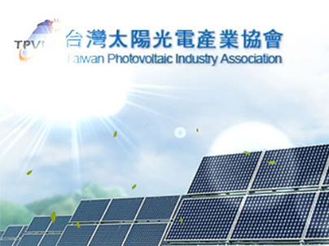

認識本會About TGEA
首頁 > 認識本會
緣起
全球暖化氣溫上升引發的極端氣候，造成世界各地災情不斷與龐大的經濟損失，降低碳排放量已刻不容緩，也是全球各國共同面對的課題。
而發展與推廣綠色能源以及研發創造新能源，是目前需要解決的目標。
【臺北市綠能協會】是一個全國性的非營利事業組織（NPO），
以提升綠能發展的認知觀念、推動低碳排放、創造永續環境，並結合產官學專家爭取公共政策參與，為台灣下一代貢獻力量。
本會結合國內綠電發展相關領域企業以及學術研究機構之專業人員，提供政府綠電能源政策建言，促進國內綠能應用與技術服務。
並不定期舉辦綠電發展與 ESG 永續系列講座，與國內外產業專家一起探討綠色能源永續發展的核心價值。
任務 / Mission

（一）研議綠能發電產業推廣策略，以提供政府施政及產業界發展參考。
（二）結合產學研發技術推動綠色能源發展，促進國際交流。
（三）建立綠色能源與企業永續資訊服務平台。
（四）參與政府部會產業技術認證測試制度之推動。
（五）辦理國內外參訪考察研習活動之規劃執行。
（六）農漁光電、土地併聯、環評等法規內容交流溝通。
（七）增進社會大眾對綠色能源發電科技及環境生態的認識與應用。
（八）其他綠能相關學術研究之產官學綜合研習推廣業務辦理。
合作單位 / Cooperative unit
太陽光電能源科技股份有限公司

地熱發電合作

StartUs Insights
